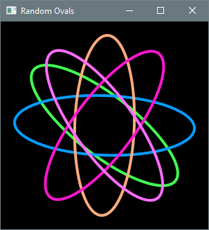

4.2 Helper Methods in Practice
Key terms: method header, method body, return type, principle of least privilege, parameter, local variable
4.2.1 Implementing Helper Methods
A method definition consists of a header and a body. The header describes how the method can be used, while the body (enclosed in curly braces) contains the statements to be executed. By convention, the body is indented one level beyond the header. Indentation visually signals containment: the method belongs to the class, and the statements belong to the method:
class header {
method header {
method body
}
}
The method header consists of optional modifiers, a return type, a method name, a parameter list enclosed in parentheses, and an optional exception list:
-
Modifiers. Access modifiers such as
publicandprivatedetermine the contexts from which a method can be called. Aprivatemethod is accessible only within its own class. Helper methods should beprivatesince they exist only to support other methods of their class. This follows the principle of least privilege: variables, methods, classes, and other program elements should be accessible only to those parts of an application that actually need them. This reduces unintended dependencies. Thestaticmodifier signifies a class method; without this modifier, the method is implicitly an instance method. -
Return type. The return type specifies the kind of value a method returns. The compiler ensures that any use of the returned value is consistent with this declared type. Methods that do not return a value still have a return type, indicated by the keyword
void. -
Method name. By convention, method names in Java describe the action performed and are often verbs or verb phrases. Method names are written in lower camel case, as in
calculateProfitanddrawCircle. -
Parameter list. Parameters name the inputs supplied by the caller. They appear inside parentheses as comma-separated type-name pairs. Methods with no inputs have an empty parameter list.
-
Exception list. Some methods must declare exceptions that may be thrown. This will be discussed in Chapter 11; until then, no methods appearing in this book will include an exception list.
Methods that return a value include a return statement specifying that value, which terminates the
method and returns control to the caller. Void methods may use return to exit early; otherwise,
control returns automatically at the end of the method.
4.2.2 Eliminating Redundancy with a Helper Method
Listing 4.2.2 is a modular revision of Listing 4.1.3. A helper method, rollDice, rolls three dice
and returns the result as a string. The main method now calls this helper for each player,
eliminating redundancy. The @return tag in a method's doc comment is used to document what the
method returns when this is not clear from the description.
Players could be added with additional calls to rollDice. Testing and debugging are simplified
because the simulation and sorting logic are confined to the helper method.
Listing 4.2.2 - ThreeDiceRoller2.java
package chap04.sect2;
import java.util.concurrent.ThreadLocalRandom;
/**
* Rolls three dice for two players and displays them in ascending order.
*
* @author Drue Coles
*/
public class ThreeDiceRoller2 {
public static void main(String[] args) {
System.out.printf("Player 1 rolls %s %n", rollDice());
System.out.printf("Player 2 rolls %s %n", rollDice());
}
/**
* Rolls three dice.
*
* @return a string with the dice values in ascending order
*/
private static String rollDice() {
ThreadLocalRandom rand = ThreadLocalRandom.current();
final int sides = 6;
int die1 = rand.nextInt(1, sides + 1);
int die2 = rand.nextInt(1, sides + 1);
int die3 = rand.nextInt(1, sides + 1);
int lo = Math.min(die1, Math.min(die2, die3));
int hi = Math.max(die1, Math.max(die2, die3));
int mid = (die1 + die2 + die3) - lo - hi;
return lo + "-" + mid + "-" + hi;
}
}
Replacing repeated blocks of code with method calls is a direct application of the DRY principle. It makes the program shorter, clearer, and less error-prone.
4.2.3 Returning Values vs. Writing Output
Note that rollDice does not output results directly but instead returns a string containing them.
This design makes the method more flexible: the caller can display the result, combine it with other
data, store it, or pass it to another method. Helper methods that return values rather than
producing output do not commit the program to a particular form of output and therefore remain
useful as a program evolves.
4.2.4 Parameterized Helper Methods
In Listing 4.2.4, rollDice is enhanced with a parameter representing the number of sides on a die.
When the method is called in main, the argument's value is copied to the parameter and used by the
method to generate random numbers.
Listing 4.2.4 - ThreeDiceRoller3.java
package chap04.sect2;
import java.util.Scanner;
import java.util.concurrent.ThreadLocalRandom;
/**
* Rolls three dice for two players and displays them in ascending order.
*
* @author Drue Coles
*/
public class ThreeDiceRoller3 {
public static void main(String[] args) {
Scanner in = new Scanner(System.in);
System.out.print("Enter number of sides: ");
int sides = in.nextInt();
System.out.printf("Player 1 rolls %s %n", rollDice(sides));
System.out.printf("Player 2 rolls %s %n", rollDice(sides));
}
/**
* Rolls three dice.
*
* @return a string with the three values in ascending order
*/
private static String rollDice(int sides) {
ThreadLocalRandom rand = ThreadLocalRandom.current();
int die1 = rand.nextInt(1, sides + 1);
int die2 = rand.nextInt(1, sides + 1);
int die3 = rand.nextInt(1, sides + 1);
int lo = Math.min(die1, Math.min(die2, die3));
int hi = Math.max(die1, Math.max(die2, die3));
int mid = (die1 + die2 + die3) - lo - hi;
return lo + "-" + mid + "-" + hi;
}
}
This parameterized version of the helper method makes generalizing the program straightforward: the
main method only needs to read user input and pass it to rollDice.
4.2.5 Local Variables
A local variable is one that is declared inside a method. Class constants are an example of variables that are not local; other examples will be introduced in Chapter 8.
A local variable exists only while its method is executing, so variables defined in one method are
not accessible by another. This is why the user's input in Listing 4.2.4 had to be passed to
rollDice; its parameter is also local and ceases to exist when the method returns.
At first, the limited scope of a local variable may seem inconvenient. In reality, it greatly simplifies programming, enhancing modularity by preventing unwanted dependencies between methods. As a result, methods are self-contained: they can be tested, debugged, and reimplemented without affecting any other part of the program.
4.2.6 Graphics Example
Listing 4.2.5 is a JavaFX application that draws five randomly colored and rotated ovals centered in the viewing area. Implementing this program monolithically would make it longer and more complex, since each call to the helper method would have to be replaced by all the statements it contains, violating the DRY principle.
Listing 4.2.5 - RandomOvals.java
package chap04.sect2;
import java.util.concurrent.ThreadLocalRandom;
import javafx.application.Application;
import javafx.scene.Scene;
import javafx.scene.layout.StackPane;
import javafx.scene.paint.Color;
import javafx.scene.shape.Ellipse;
import javafx.stage.Stage;
/**
* Draws five ovals, each with a random color and a random angle of rotation.
*
* @author Drue Coles
*/
public class RandomOvals extends Application {
@Override
public void start(Stage stage) {
StackPane root = new StackPane();
final int size = 300;
Scene scene = new Scene(root, size, size, Color.BLACK);
final int padding = 20; // space between oval and edge of scene
final int ovalWidth = size - 2 * padding;
final int ovalHeight = ovalWidth / 3;
root.getChildren().add(randomOval(ovalWidth, ovalHeight));
root.getChildren().add(randomOval(ovalWidth, ovalHeight));
root.getChildren().add(randomOval(ovalWidth, ovalHeight));
root.getChildren().add(randomOval(ovalWidth, ovalHeight));
root.getChildren().add(randomOval(ovalWidth, ovalHeight));
stage.setTitle("Random Ovals");
stage.setScene(scene);
stage.show();
}
/**
* Creates and returns an oval shape with a randomly assigned color and angle of rotation.
*/
private static Ellipse randomOval(double width, double height) {
// constructor expects horizontal/vertical radius, not full width/height
Ellipse ellipse = new Ellipse(width / 2, height / 2);
ellipse.setFill(null);
ellipse.setStrokeWidth(4);
ellipse.setStroke(randomColor());
ellipse.setRotate(ThreadLocalRandom.current().nextInt(360));
return ellipse;
}
/**
* Creates and returns a color with random RGB components.
*/
private static Color randomColor() {
ThreadLocalRandom rand = ThreadLocalRandom.current();
double r = rand.nextDouble();
double g = rand.nextDouble();
double b = rand.nextDouble();
// brightened for contrast with black background
return Color.color(r, g, b).brighter().brighter();
}
public static void main(String[] args) {
launch(args);
}
}
Output 4.2.5

A helper method creates and styles Ellipse objects with the desired properties, which are then
added to the root node of the scene. A StackPane serves as the root node. This container organizes
children in a back-to-front stack and centers them by default, so explicit positional coordinates
are unnecessary. The two-argument Ellipse constructor assigns the center coordinates to the origin
by default, but StackPane positions children based on its own layout rules.